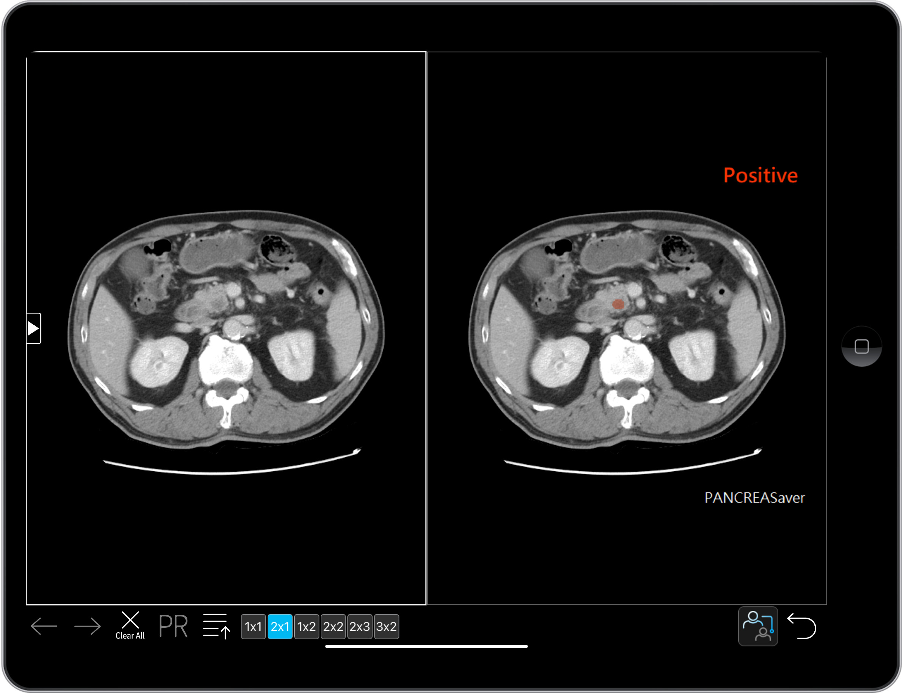

The world's first AI-assisted CT detection system for pancreatic cancer
PANCREASaver® is a medical device software (SaMD): the moment an abdominal CT scan finishes, it automatically reads the images, marks suspicious pancreatic lesions, and sends the alert back into the radiology workflow — so early pancreatic cancer is no longer missed.
Fully automated, real-time reading
Analysis starts automatically when the scan completes — no extra steps for physicians; CNN deep learning and radiomics engines run in parallel.
Small tumors, still detected
92.1% sensitivity for lesions <2cm — closing the gap where eyes and conventional tools miss.
Clinically validated
5 international journal papers and a nationwide multicenter AUC of 0.95, led by the NTUH team.
Five lines of defense, none missing
Week 1 · Assessment
Analyzes during the CT acquisition; a full pancreatic read in minutes, catching sub-2cm lesions.
Week 2 · Integration
An orange reticle pinpoints lesion location and extent — visible at a glance.
Week 3 · Validation & training
High-risk studies are prioritized automatically; alerts trigger the care team sooner.
Week 4 · Go-live
Auto-generates structured reads with location, size and risk — less reporting time.
Fully automated
No clicks required; the scan triggers the engine. Radiologists read, AI stands guard.
Seamless PACS integration
Built around the PACS workflow — deployed in 4 weeks without changing daily practice.
From scan to alert, in minutes
CT scan
Patient undergoes abdominal CT; images stream in.
AI reads in real time
PANCREASaver® analyzes the full pancreas within minutes.
Auto-mark + alert
Lesion locked and marked; PACS alert fires.
Radiologist review
The radiologist confirms the marks and signs the final report.
Not a mockup — a system running in hospitals today
From Stone Web Viewer integration to Bridge login, PANCREASaver® is deployed at medical centers, regional hospitals and screening centers — 300+ scans reviewed.

PANCREASaver®